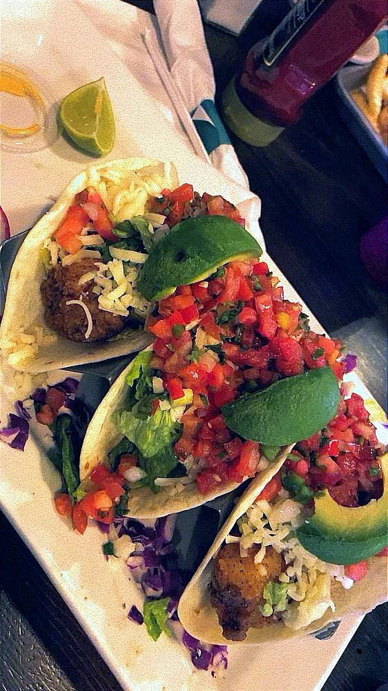
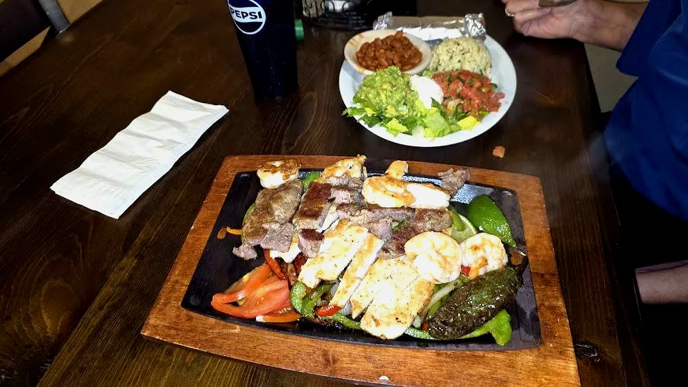

Plates people order
The food
Plates people talk about. Call for today’s sides.
(870) 942-4163

Chicken fried steak
Cream gravy. Mashed potatoes, green beans.

Catfish dinner
Hand-breaded. Comes out on a tray.

Firecracker tacos
Fried shrimp. Pico, avocado, heat.

Caribbean salmon
Cilantro rice, grilled vegetables, shrimp.
Guest photos
Same kitchen. Pictures from the table.
Posted by guests on Facebook.

The tray
A regular posted this.

Fish tacos
Avocado, cabbage, lime.

Fajitas
Chicken, steak, shrimp. Skillet comes out hot.
People also order
Call for the rest
- Philly cheese steak egg rollsHandmade. White cheese sauce on the side.
- Southwest egg rollsMade here. Not the frozen bag.
- Chicken bacon ranch quesadillaA regular order.
- Shrimp po’boyWhen it’s on.
- Burgers, tacos, saladsCall if you want the rest of the list.
Prices from the kitchen. This list is from public mentions.
More plates on Facebook